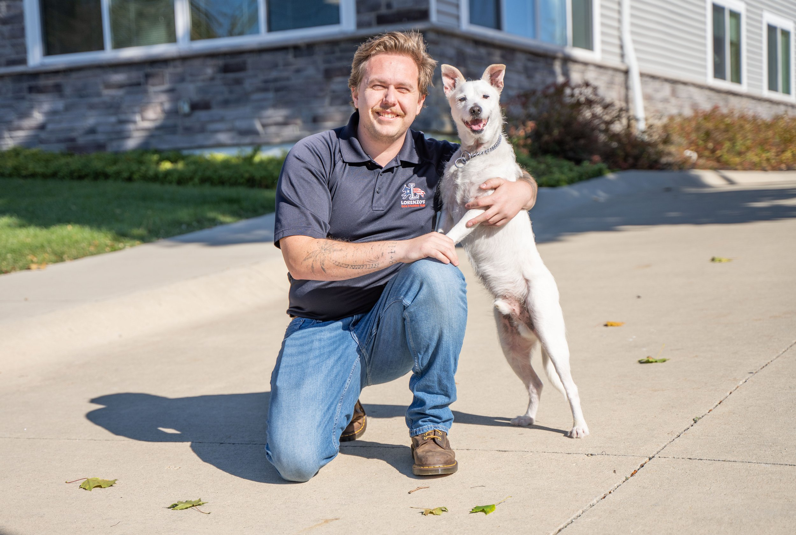

Fred Harris
San Diego, CA
Frederick brings strong people skills, discipline, and a service mindset to dog training after years in hospitality and nonprofit work supporting foster youth.

San Diego, CA
Frederick brings strong people skills, discipline, and a service mindset to dog training after years in hospitality and nonprofit work supporting foster youth.
Frederick Harris was born in Puerto Vallarta, Jalisco, and raised in Sayulita before relocating to San Diego at the age of 10, where he continues to reside today. His diverse background and life experiences have shaped a strong passion for personal growth, service, and helping others succeed. Frederick discovered Lorenzo’s Dog Training Team through Carolina, a trainer that holds the position of Team Coordinator with the company, whom he met at a gym and who introduced him to the program.
At a point in his life where he was actively seeking meaningful change and a way to positively impact others, dog training stood out as the perfect combination of purpose, discipline, and service. With a strong foundation in working with people, Frederick brings years of experience from the restaurant industry, where he has worked since the age of 16, as well as volunteer work with a nonprofit supporting foster youth. These roles helped him develop patience, leadership, communication skills, and the ability to adapt to different personalities — all essential qualities in effective dog training.
Frederick’s goals are simple but powerful: to grow better each year and help those around him do the same. He is deeply committed to personal development and believes that training dogs is just as much about guiding people toward confidence, clarity, and consistency. Outside of dog training, Frederick enjoys weightlifting, martial arts, combat sports, and spending quality time with loved ones.
His active lifestyle, disciplined mindset, and genuine desire to help others make him a valuable addition to the Lorenzo’s Dog Training Team.
Send your request directly to Lorenzo's office with Fred Harris already assigned as the source trainer.